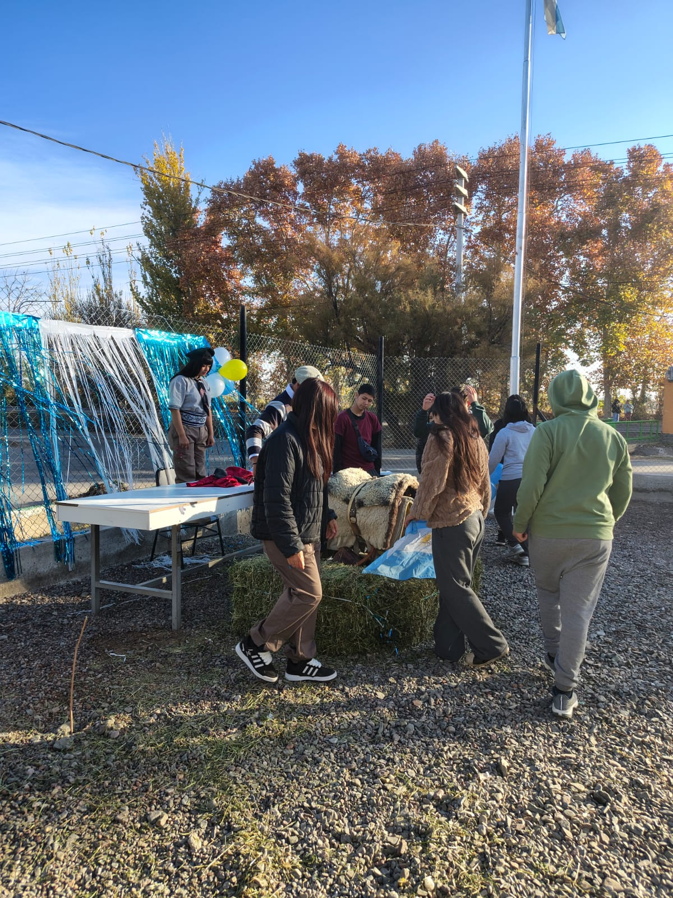
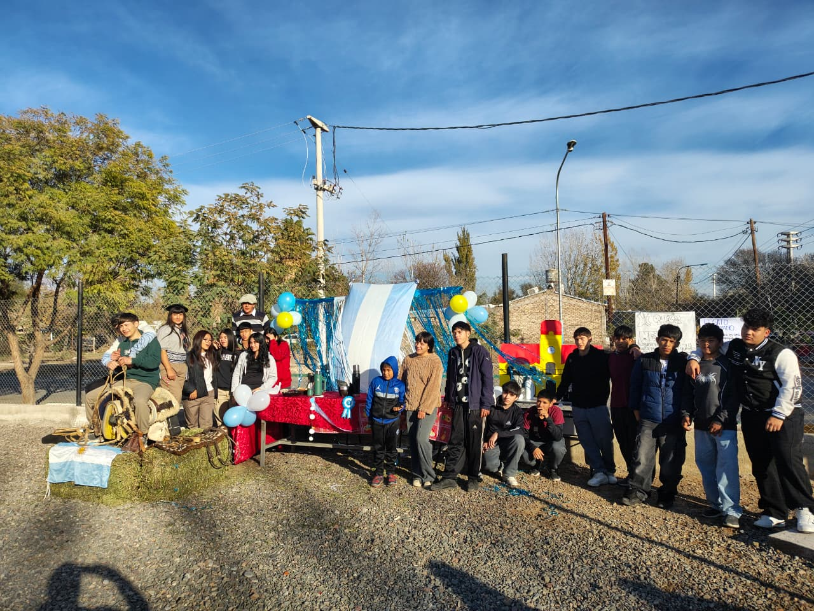
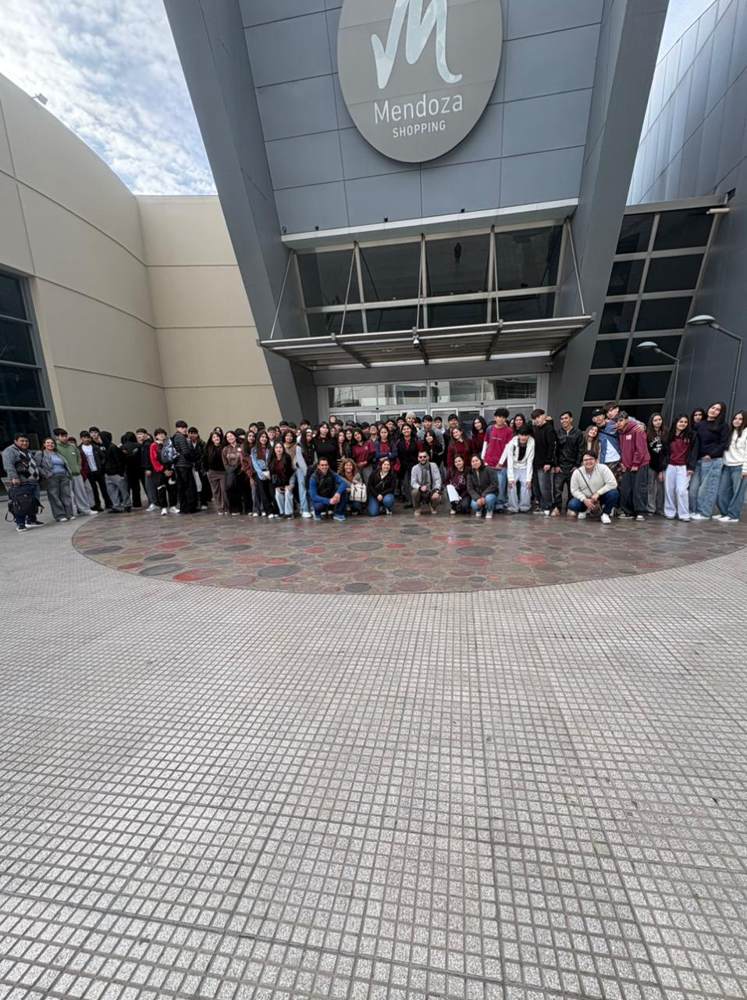
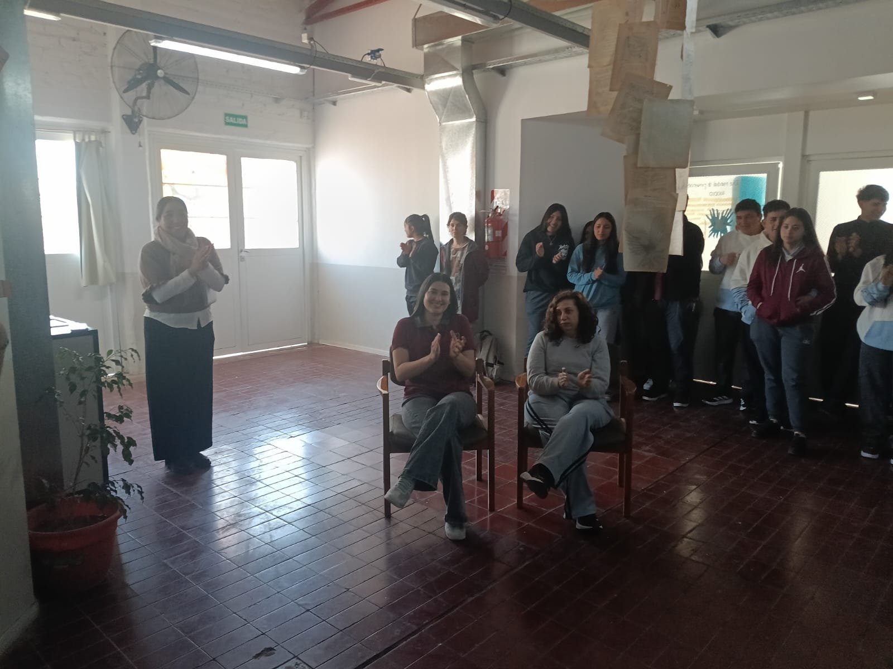

1° Año Ciclo Básico
- Lengua y Literatura
- Matemática
- Inglés
- Educación Física
- Historia
- Geografía
- Biología
- Educación Artística (Música / Artes Visuales / Teatro / Danza)
- Tecnología
- Formación Ética y Ciudadana

Lavalle · Barrio Jarilleros
La Escuela Alicia Moreau de Justo 4-041, Anexo Barrio Jarilleros, acerca la educación secundaria y el Bachillerato en Informática a jóvenes de la comunidad.
Conocé el bachilleratoNuestra comunidad
El anexo funciona en el barrio Jarilleros, en Jocolí Viejo, Lavalle. Sus nuevas aulas se habilitaron para que jóvenes de la zona puedan cursar la secundaria y formarse en informática sin alejarse de su comunidad.
Nuestra propuesta
Una propuesta de educación secundaria orientada al mundo digital y la programación, organizada en cinco cursos.
Orientación secundaria
Formación vinculada con la informática, el mundo digital y la programación, junto con los saberes de la educación secundaria.
En el anexo funcionan cinco cursos para 130 jóvenes de la comunidad. Las aulas están en el ex salón comunitario del barrio, en Ruta Provincial 34 s/n, Jarilleros.
Las materias y denominaciones con alternativas pueden variar según la orientación y el plan de estudios institucional.
La vida en la escuela
Celebraciones, encuentros y actividades que hacen especial el año escolar en nuestra comunidad.



Puertas abiertas
La Escuela Alicia Moreau de Justo 4-041 y su anexo en Jarilleros te esperan para seguir aprendiendo y creciendo en comunidad.
Leé la nota sobre el anexo ↗